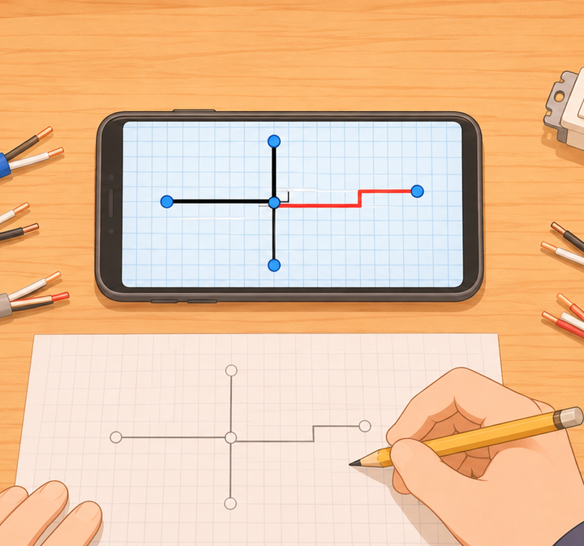

iPhone 向け・第二種電気工事士 技能試験（令和8年度 候補問題）
単線図を見て、
白と黒をつなぐ。
「けっせん」は、技能試験の候補問題 13 問の複線図を、端子をつないで描き、試験の決まりで採点するアプリです。描いた線の電気のつながり・色・リングスリーブと刻印まで見て、欠陥の場所を図の上で光らせます。
App Store で見る（準備中）iPhone 専用の有料アプリです。一度買えば、13 問ぜんぶ使えます。あとからお金はかかりません。広告もありません。

こんな困りごとのために作りました
紙に描いた複線図が、合っているか分からない
描いたら「採点する」を押すだけ。スイッチのすべての入り切りで、施工条件どおりに点くか・短絡しないかを確かめ、極性・電線の色・ケーブルの心線の数・接続方法・スリーブと刻印を見ます。欠陥は、図の上のその場所が光ります。
複線図の解説が無い
13 問すべてに手本の複線図があります。白（接地側）→ 黒（非接地側）→ スイッチから器具へ → 接地線 → ボックスの接続、の順に1段ずつ見られます。
最初の1問だけ無料で、あとから課金
買い切りで 13 問ぜんぶ。アプリ内課金はありません。
図が小さくて見づらい
図はすべて描き直したもので、拡大しても崩れません。器具の端子には、受金・W・S1・0・1・3 などの名前を書いています。
けっせんの流れ
まず No.1 を手本どおりになぞる
次につなぐ端子・決める色・接続が光るので、そのとおりに押すだけ。操作を覚えられます。
毎日「今日の1問」
まだ欠陥なしで描けていない問題から順に出ます。描き終えるまでの時間を毎回はかります（画面を消しても狂いません）。
採点して、直して、手本を見る
欠陥は種類ごとに並び、押すと図の上でその場所だけが光ります。描きかけは問題ごとに残ります。
受検日の7日前からは「本番の通し」
13問から1問を、ヒントなしで時間をはかって描きます。最近の欠陥の種類も出ます。
できること
| 候補問題 | 令和8年度の No.1〜13（3路・4路スイッチ、タイムスイッチ、自動点滅器、リモコンリレー、三相200V、接地極付コンセント、金属管・PF管の IV 線など） |
|---|---|
| 描き方 | 端子を2つ押すとつながり、線は図のケーブルに沿って自動で引かれます。線を押して色、ボックスの点を押して接続を決めます |
| 採点 | 誤接続・誤結線、器具の極性、電線の色別、ケーブルの心線の数、接続方法（リングスリーブか差込形コネクタか）、スリーブの大きさと刻印 |
| 手本 | 描く順に5段。どの端子どうしをつなぐか、ボックスの接続ごとの電線の本数とスリーブ |
| 決まりの早見 | 電線の色の決まり、リングスリーブと刻印の表、端子台（タイムスイッチ・自動点滅器・リモコンリレー）の端子 |
| 記録 | 描き終えるまでの時間と欠陥の移り変わり。記録はあなたの iCloud に控えます |
| iPhone Duo | 開いて横にすると、左に施工条件と採点の結果、右に複線図を並べます |
| 広告・課金・登録 | 広告なし・アプリ内課金なし・アカウント登録なし。ネットにつながっていなくても使えます。開発者はデータを集めません |
施工条件は練習用です。本番は、問題用紙に書かれた施工条件が正です。寸法・被覆のはぎ取り・締め付けなど、実物の作業は判定しません。
よくある質問
手本は正しいですか
手本は、図の電線のつながりから道具で導き、スイッチのすべての組み合わせで点くかを数え直す検査と、令和8年度上期の試験の材料表・公表された解答例との突き合わせを通しています。それでも誤りを見つけたら、設定の「問題の誤りを知らせる」から送ってください。
本番の問題ですか
図は、試験センターが公表した候補問題をもとに描き直したものです。本番では、候補問題の中から1問が出て、施工条件は問題用紙に書かれます。けっせんは試験センターとは関係のない、個人が作った練習アプリです。
機種変更したら記録はどうなりますか
記録の控えを、あなたの iCloud に置いています。新しい iPhone で同じ Apple アカウントにサインインしていれば、続きから使えます。
返金はできますか
返金は Apple の規定に従います。reportaproblem.apple.com からお申し出ください。開発者が直接返金することはできません。
お問い合わせ
不具合や気になることがあれば、ryo.tsuzukihashi@tsuzukit.com までご連絡ください。作っているのは個人開発者の續橋涼（TsuzuKit）です。